데이터 기준 2026년 11월 14일(한국 시간), 미국 11월 13일 종가 · stayhungryasi.com
표기 규칙: 수치와 발언은 출처 기준 사실이다. '확신도 97%'는 작성자의 주관적 판단이다. 확인하지 못한 항목은 '미확인'으로 적었다. 11월 14일 22시(한국 시간)에 다시 확인했을 때도 카탄자로 외에 명단에 오른 인물의 공개 입장은 없었다. 투자 권유가 아니다.
핵심만 11장으로 요약했다. 이미지를 누르면 크게 볼 수 있다.
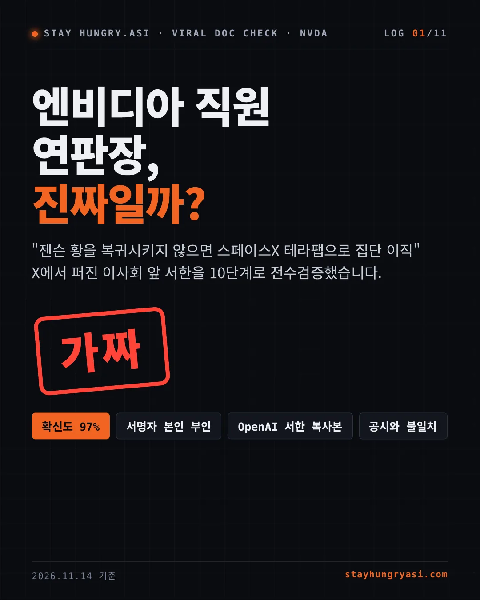
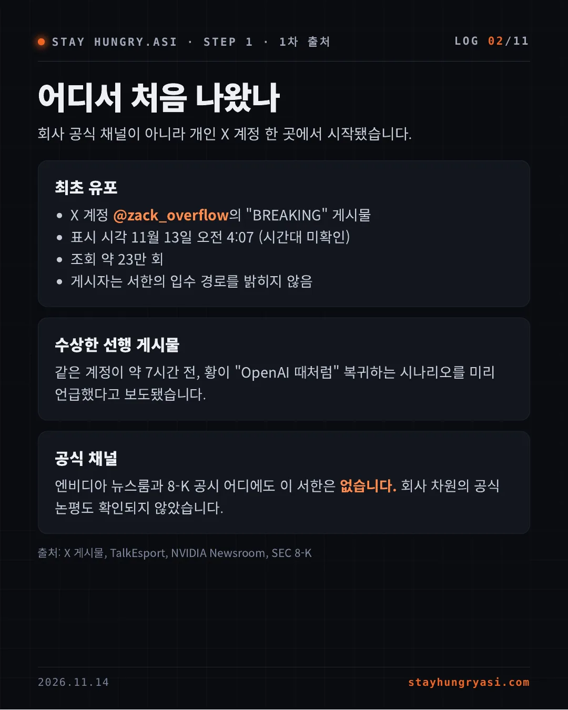
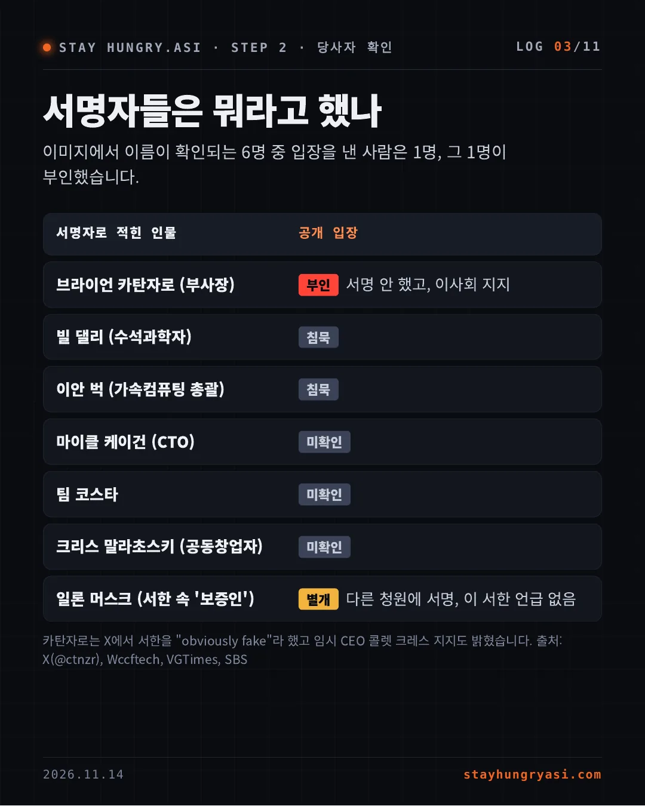
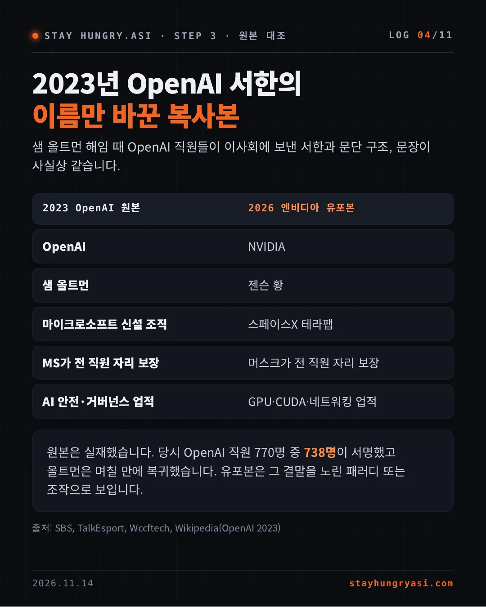
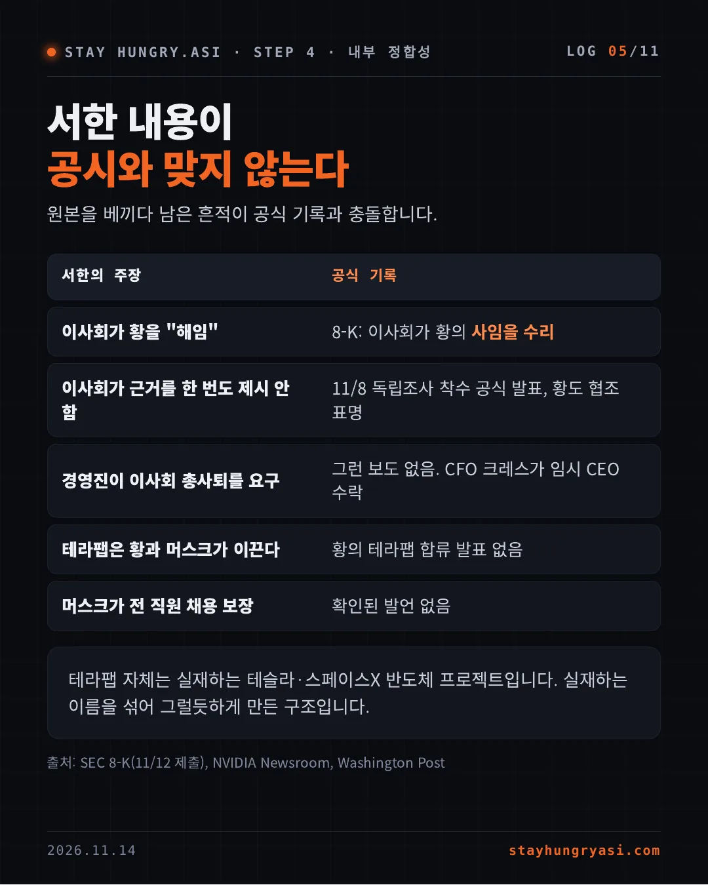
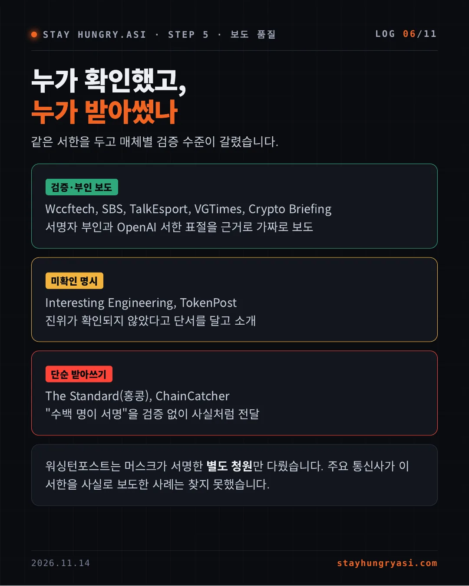
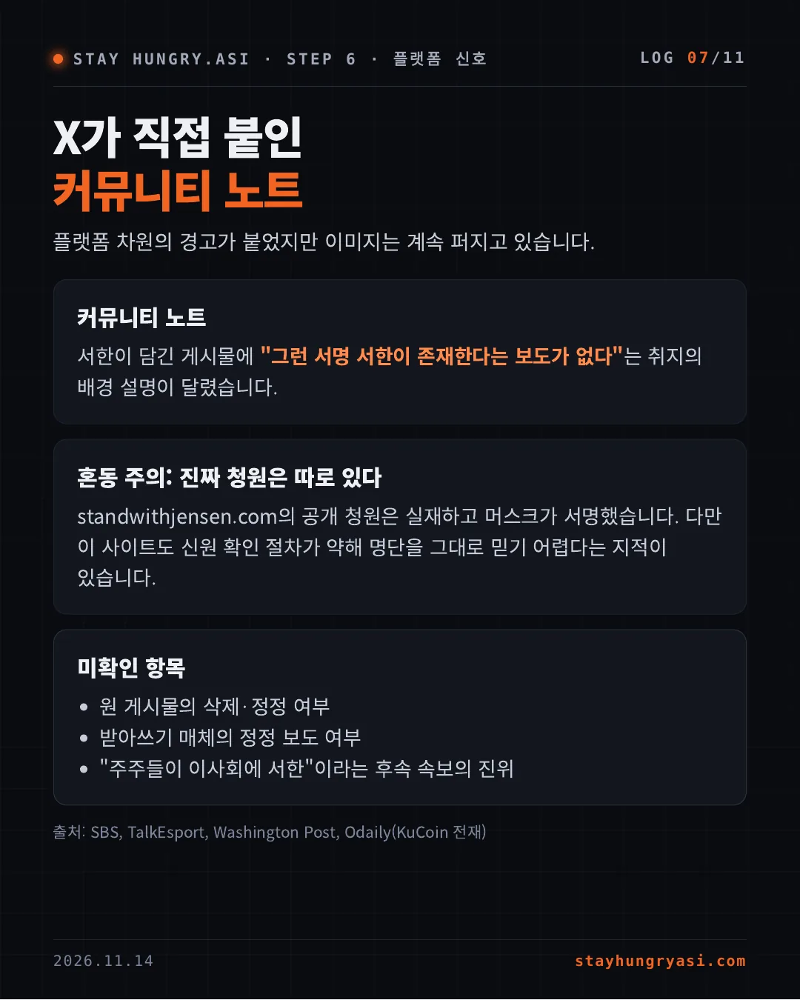
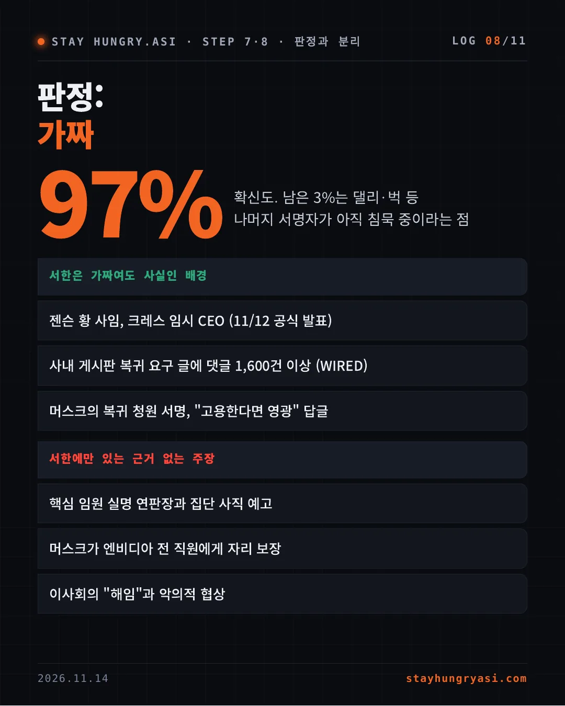
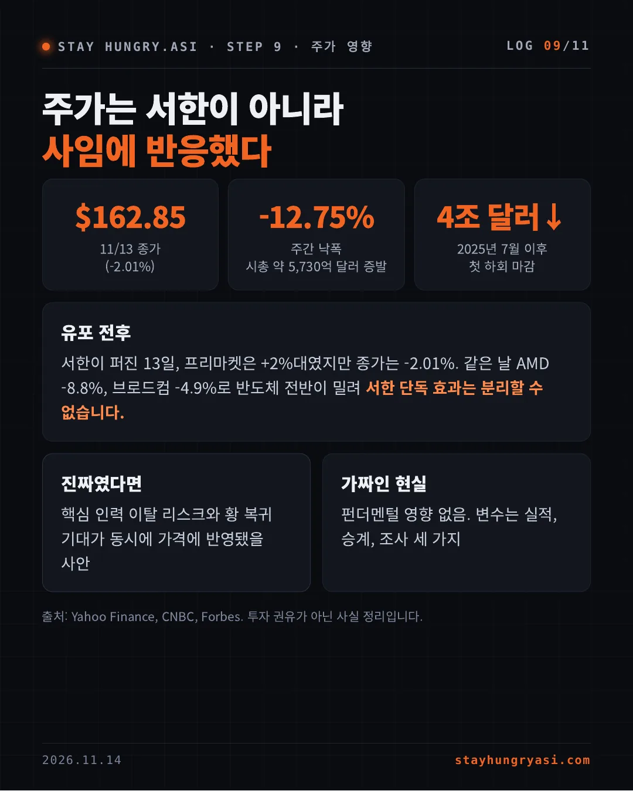
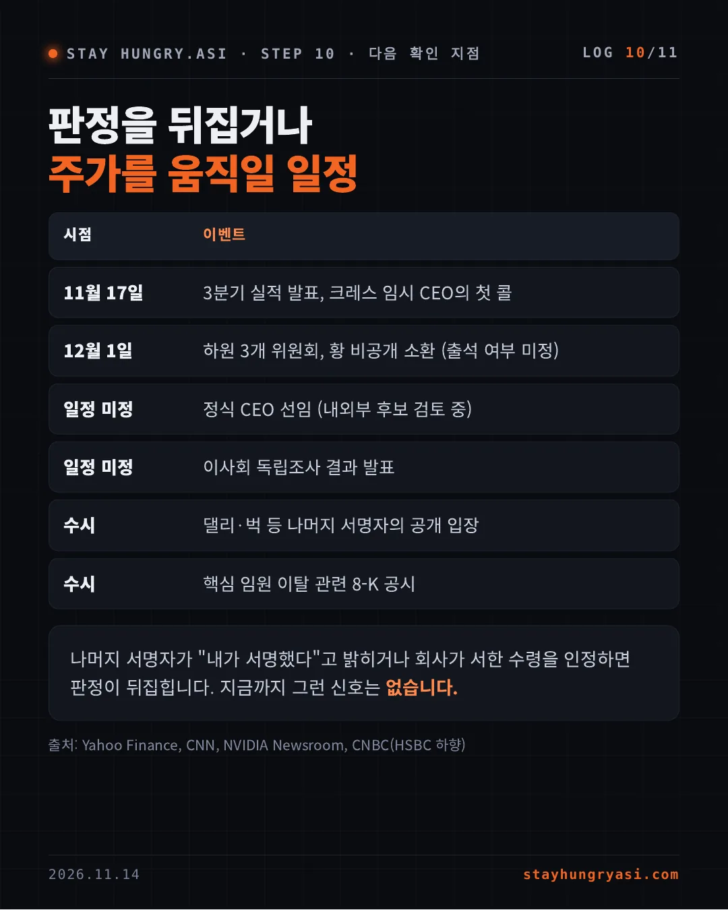
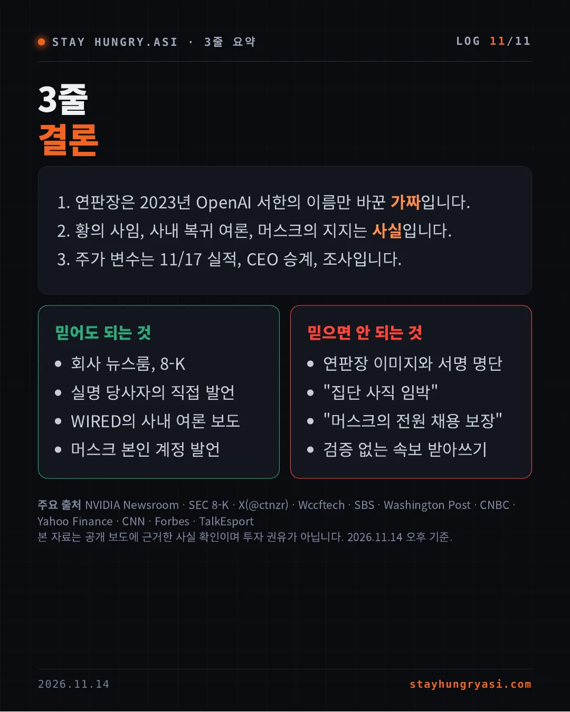
회사 공식 채널이 아니라 개인 X 계정 한 곳에서 시작됐습니다.
같은 계정이 약 7시간 전, 황이 "OpenAI 때처럼" 복귀하는 시나리오를 미리 언급했다고 보도됐습니다.
엔비디아 뉴스룸과 8-K 공시 어디에도 이 서한은 없습니다. 회사 차원의 공식 논평도 확인되지 않았습니다.
출처: X 게시물, TalkEsport, NVIDIA Newsroom, SEC 8-K
이미지에서 이름이 확인되는 6명 중 입장을 낸 사람은 1명, 그 1명이 부인했습니다.
| 서명자로 적힌 인물 | 공개 입장 |
|---|---|
| 브라이언 카탄자로 (부사장) | [부인] 서명 안 했고, 이사회 지지 |
| 빌 댈리 (수석과학자) | [침묵] |
| 이안 벅 (가속컴퓨팅 총괄) | [침묵] |
| 마이클 케이건 (CTO) | [미확인] |
| 팀 코스타 | [미확인] |
| 크리스 말라초스키 (공동창업자) | [미확인] |
| 일론 머스크 (서한 속 '보증인') | [별개] 다른 청원에 서명, 이 서한 언급 없음 |
카탄자로는 X에서 서한을 "obviously fake"라 했고 임시 CEO 콜렛 크레스 지지도 밝혔습니다. 출처: X(@ctnzr), Wccftech, VGTimes, SBS
샘 올트먼 해임 때 OpenAI 직원들이 이사회에 보낸 서한과 문단 구조, 문장이 사실상 같습니다.
| 2023 OpenAI 원본 | 2026 엔비디아 유포본 |
|---|---|
| OpenAI | NVIDIA |
| 샘 올트먼 | 젠슨 황 |
| 마이크로소프트 신설 조직 | 스페이스X 테라팹 |
| MS가 전 직원 자리 보장 | 머스크가 전 직원 자리 보장 |
| AI 안전·거버넌스 업적 | GPU·CUDA·네트워킹 업적 |
원본은 실재했습니다. 당시 OpenAI 직원 770명 중 738명이 서명했고 올트먼은 며칠 만에 복귀했습니다. 유포본은 그 결말을 노린 패러디 또는 조작으로 보입니다.
출처: SBS, TalkEsport, Wccftech, Wikipedia(OpenAI 2023)
원본을 베끼다 남은 흔적이 공식 기록과 충돌합니다.
| 서한의 주장 | 공식 기록 |
|---|---|
| 이사회가 황을 "해임" | 8-K: 이사회가 황의 사임을 수리 |
| 이사회가 근거를 한 번도 제시 안 함 | 11/8 독립조사 착수 공식 발표, 황도 협조 표명 |
| 경영진이 이사회 총사퇴를 요구 | 그런 보도 없음. CFO 크레스가 임시 CEO 수락 |
| 테라팹은 황과 머스크가 이끈다 | 황의 테라팹 합류 발표 없음 |
| 머스크가 전 직원 채용 보장 | 확인된 발언 없음 |
테라팹 자체는 실재하는 테슬라·스페이스X 반도체 프로젝트입니다. 실재하는 이름을 섞어 그럴듯하게 만든 구조입니다.
출처: SEC 8-K(11/12 제출), NVIDIA Newsroom, Washington Post
같은 서한을 두고 매체별 검증 수준이 갈렸습니다.
Wccftech, SBS, TalkEsport, VGTimes, Crypto Briefing
서명자 부인과 OpenAI 서한 표절을 근거로 가짜로 보도
Interesting Engineering, TokenPost
진위가 확인되지 않았다고 단서를 달고 소개
The Standard(홍콩), ChainCatcher
"수백 명이 서명"을 검증 없이 사실처럼 전달
워싱턴포스트는 머스크가 서명한 별도 청원만 다뤘습니다. 주요 통신사가 이 서한을 사실로 보도한 사례는 찾지 못했습니다.
플랫폼 차원의 경고가 붙었지만 이미지는 계속 퍼지고 있습니다.
서한이 담긴 게시물에 "그런 서명 서한이 존재한다는 보도가 없다"는 취지의 배경 설명이 달렸습니다.
standwithjensen.com의 공개 청원은 실재하고 머스크가 서명했습니다. 다만 이 사이트도 신원 확인 절차가 약해 명단을 그대로 믿기 어렵다는 지적이 있습니다.
출처: SBS, TalkEsport, Washington Post, Odaily(KuCoin 전재)
97% 확신도. 남은 3%는 댈리·벅 등 나머지 서명자가 아직 침묵 중이라는 점
| 서한은 가짜여도 사실인 배경 |
|---|
| 젠슨 황 사임, 크레스 임시 CEO (11/12 공식 발표) |
| 사내 게시판 복귀 요구 글에 댓글 1,600건 이상 (WIRED) |
| 머스크의 복귀 청원 서명, "고용한다면 영광" 답글 |
| 서한에만 있는 근거 없는 주장 |
|---|
| 핵심 임원 실명 연판장과 집단 사직 예고 |
| 머스크가 엔비디아 전 직원에게 자리 보장 |
| 이사회의 "해임"과 악의적 협상 |
서한이 퍼진 13일, 프리마켓은 +2%대였지만 종가는 -2.01%. 같은 날 AMD -8.8%, 브로드컴 -4.9%로 반도체 전반이 밀려 서한 단독 효과는 분리할 수 없습니다.
핵심 인력 이탈 리스크와 황 복귀 기대가 동시에 가격에 반영됐을 사안
펀더멘털 영향 없음. 변수는 실적, 승계, 조사 세 가지
출처: Yahoo Finance, CNBC, Forbes. 투자 권유가 아닌 사실 정리입니다.
| 시점 | 이벤트 |
|---|---|
| 11월 17일 | 3분기 실적 발표, 크레스 임시 CEO의 첫 콜 |
| 12월 1일 | 하원 3개 위원회, 황 비공개 소환 (출석 여부 미정) |
| 일정 미정 | 정식 CEO 선임 (내외부 후보 검토 중) |
| 일정 미정 | 이사회 독립조사 결과 발표 |
| 수시 | 댈리·벅 등 나머지 서명자의 공개 입장 |
| 수시 | 핵심 임원 이탈 관련 8-K 공시 |
나머지 서명자가 "내가 서명했다"고 밝히거나 회사가 서한 수령을 인정하면 판정이 뒤집힙니다. 지금까지 그런 신호는 없습니다.
출처: Yahoo Finance, CNN, NVIDIA Newsroom, CNBC(HSBC 하향)
주요 출처 NVIDIA Newsroom · SEC 8-K · X(@ctnzr) · Wccftech · SBS · Washington Post · CNBC · Yahoo Finance · CNN · Forbes · TalkEsport
본 자료는 공개 보도에 근거한 사실 확인이며 투자 권유가 아닙니다. 2026.11.14 오후 기준.